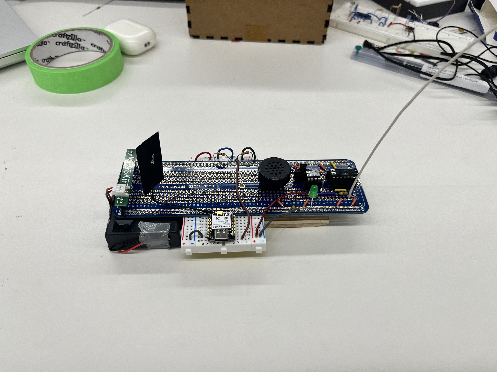

Welcome to my PS70 portfolio! I hope you enjoy learning more about my project for PS70: Intro to Digital Fabrication.
The Making of Ther-e-Man
Early Prototypes
When first setting out to make this project, I had very limited experience with electronics, and I had no idea how a theremin worked. However, I was curious about how we could wirelessly send continuous signals for musical purposes from the first weeks.
One early prototype, taken from the Arduino projects book, used a photoresistor to act as the sensor, but this completely failed as the photoresistor could not detect a wide-enough range of signals. Instead, I decided to use ultrasonic sensors to gather hand-distance information:

Still, this had some pretty sizable issues. The biggest problem was that the signal was really choppy, and the hand had to be perfectly positioned to register. It was certainly far from a real theremin.
Enter Capacitance
Luckily, a few weeks later we would begin our lessons on electronic input devices, and capacitance featured prominently there. I still had no idea how a capacitor as I understood it could become a theremin, but it at least gave me a key word to start working with.
After a painful amount of googling that was ultimately fruitless, I decided to just try to make an antenna-shaped capacitor:

Here, each colored wire corresponds to one plate of the capacitor. My hope was that the sensor would pick up my hand's proximity. It turned out it did, but it also unfortunately picked up a billion other things, rendering the signal basically incomprehensible.
MVP : Capacitive Slider
I was still stumped on how to make a theremin by the time the MVP rolled around, so I decided to switch direction in case it never worked out. I ended up sort of riffing on a theremin, collecting a much more direct capacitive signal based on how much of two parallel plates overlap:
This wasn't terrible, but it was super sensitive to the pressure applied by the user, proximity to other objects, and so on. I certainly wasn't satisfied.
Putting the Theremin Back in Ther-e-Man
I eventually tried to explicitly copy successful theremin projects to get a working model, but this didn't work super well. I got the bill of materials and tried to create This DIY theremin, but it didn't work (probably due to some loose wires). However, before I started debugging, I realized that even the proper theremin actually sounds terrible, with an almost incomprehensible sound.
Eventually, with finals fast approaching, I decided to cut my losses on the electrical front and offload my knowledge to other, more informed people. I ordered this Theremin Kit from a children's electronics website, hoping that it would be easy enough to alter.
This worked out super well, and I had a working model within a day. I added a voltage divider and an ESP-32 Xiao to read the signal from the antenna, and I was starting to cook!
Transferring the Data
I initially planned to send the information to my website by constantly updating a Firebase database. I actually implemented this here following a Random Nerd Tutorials tutorial, and it worked relatively well. Still, it would often stop recieving data for large chunks of time, ruining the real-time sensitivity of the theremin.
I had better luck with a web server, implemented also following a RNT tutorial. This ended up being tricky, and I ran into a pervasive error that I was being blocked by CORS. This was only fixed by installing a Chrome Extension that explicitly gives users permission to open sites from other devices.
After that, information was flowing!
Playing the Game
I read about a JavaScript library called Phaser that seemed like a pretty easy way to create the kind of game I was going for. I followed some tutorials, and eventually found a Flappy Bird clone in Phaser by Igor Rozani to serve as a structure for my game:
I changed the physics and controls of the sprites, and swapped the existing images and sprites for more galactic-themed options. The result looked like a pretty different game, despite being relatively similar to flappy bird:
I liked how it looked! All that was left was improving the hardware
Soldering and Laser-Cutting
I wanted to make the theremin more secure, so I ended up soldering it onto a solderable breadboard:
Some of the connections were a bit shaky, so Bobby helped me fix them. Even then, some of the core components that I was afraid to solder down were connected by sockets, but these were so loose that they would often keep the circuit from completeing. I never solved this problem unfortunately.
Still, eventually I was able to get something working, so I mounted the breadboard to create a nice package:

I liked how it looked! I just needed to put it in a box.
I created a very simple box design in Fusion consisting of a series of stacked layers of wood:
And I printed it out:
The final box was superglued together, and ended up working out really well!
The rest is history. I think the project turned out really well! I hope you enjoyed reading. In short, as I said all the way back in week 2: "It seems as though building a simple homemade theremin isn't terribly difficult".
—Thomas